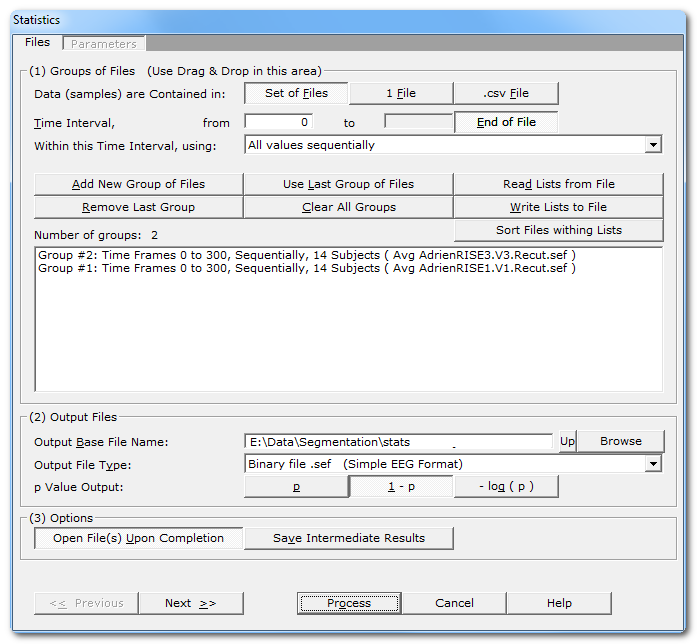
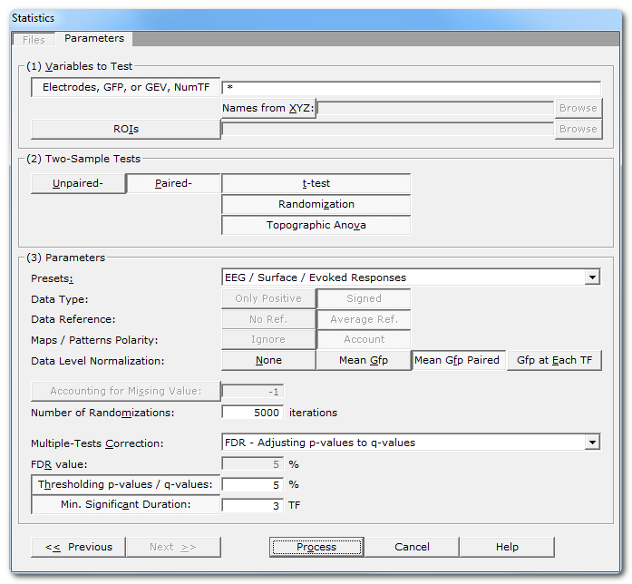
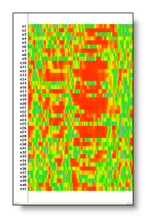
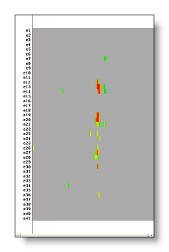
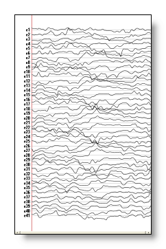
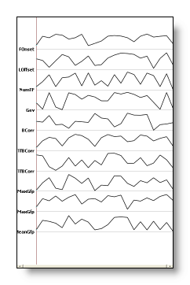
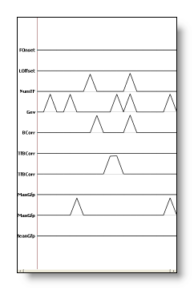

This page is about the Statistic tools implemented in Cartool, which can be used for example to test Tracks, GFPs, Topographies, Segmentation and Inverse Solution results.
Currently, only two sample statistics are implemented. That means it works only on 2 sets (or groups, or conditions) of data per subjects at a time, f.ex. one condition versus a control. If there are more than one condition, either wait for the Anova to be implemented, or run the tests pairs by pairs (though being less informative than an Anova).
All the tests are available in two variations, which are paired and unpaired. You, and only you, know which one applies. Paired tests apply f.ex. (but not only) when the same subjects have performed both conditions. Then it is legitimate to stats on the differences between conditions, which paired tests are precisely doing.
The formulas between paired and unpaired are different, the unpaired ones often resulting in less powerful tests. So prefer the paired tests if you can, but you can still see what happens in the unpaired case, though. Of course, paired conditions need to have the same number of files (i.e. of subjects) in each conditions.
The statistics can currently be applied in 3 different cases:
On a set of files, one set per condition, each file being
f.ex. an ERP or a RIS
(for a given condition and a given subject). Each
time
frame
of the ERP will be tested
sequentially,
or averaged
.
The t-test compares how the means of each conditions are far from each other, by using the standard deviation of the joined data to estimate the probability of being the same. The advantage of this method, en plus to be a standard one, is that it is very fast and straightforward to compute, and will always give the same results if run again.
This is a parametric method, and the model behind it assumes that the data have a Gaussian ("normal") distribution. Practically, it also behaves quite well even if the data are not "normal", which is our case most of the time, unfortunately.
Randomization is a general method that works on any variable you wish, and without any assumption regarding the actual data distribution, hence it is a non-parametric method.
In our case, the test is done on the average across subjects of the variables tested (electrodes' tracks or inverse solution points' tracks). The main idea is that if the data were random, shuffling them somehow will not statistically make any difference as compared to the actual data configuration. The method runs by repeating "enough time" the shuffling so as to be able to estimate the probability that the data were only there by chance.
As a consequence of the very nature of the method, results may slightly vary when run many times. Though, if the number of shuffling is big enough, it should be barely noticeable.
Alias Topographic Anova, this is also part of the non-parametric / randomization techniques. Simply, the variable tested is the dissimilarity between conditions. It will tell if there is any topographical change between conditions, without accounting for intensity.
Called from the Tools | Statistics menu, a dialog in two parts appears, both of them having to be correctly filled:

|
Groups of Files |
|
|
Specify here how data are organized within the files provided. |
|
|
One file per condition and per subject, therefore the data to test have to be retrieved across a set of files for each time frame. This case has a time dimension that can be used . |
|
|
1 File |
One file per condition, the data to be tested have been cut & paste -d into a single file. Data are then found sequentially into each file, cancelling any time dimension. |
|
.csv File |
A multidimensional array in a .csv file, the data are variables computed by the Fitting process . In this case, there is no time dimension, but just a set variables to be tested. All groups / conditions are usually contained in the same file. |
|
If applicable, specify the time interval to be tested for the next input group(s). Set this parameter before adding a new group! See this note to get the most of this parameter. |
|
|
from |
First time frame. |
|
to |
Last time frame. |
|
End of File |
Automatically set the last time frame to the actual end of the current file . |
|
Within this Time Interval, using: |
How to use this time interval for the next input group(s). Set this parameter before adding a new group! Basically, you specify if you want to take each time frame sequentially, or use their mean instead. |
|
Groups |
You can use the very convenient Drag & Drop feature here. |
|
Add New Group of Files |
Enter a new group (condition) of file(s). Depending on the data organization , you have to specify either a set of files, a single file, or a .csv file for a single group. See this note about groups. |
|
Remove Last Group |
Does what it says (amazing). |
|
Use Last Group of Files |
Re-use the files (only) of the last group entered. Don't forget to change the time settings before clicking on this button. See this note about groups. |
|
Clear All Groups |
Clear out all the groups at once. |
|
Read Lists from File |
You can direclty retrieve the lists of groups previously saved. See also Drag & Drop. |
|
You can save the lists of current groups into a file, in case you want to re-use them (much recommended!). See the file formats available. |
|
|
Sort Files within Lists |
A strange behavior of Windows is to not respect the order of the files dropped in a window. To help cure this silly habit, you can sort all the file names of all the groups already entered. Note however that Drag & Dropped files are automatically sorted. This is an important issue if you are going to do paired tests . The exact match of files between the 2 conditions / groups is of the utmost importance. I can only strongly suggest to save your lists to file, and visually check the sequence. |
|
Number of Groups: |
Just a counter of the number of groups entered. |
|
Summary list of all groups |
One group is displayed per line, summarizing the time interval, the number of files / samples, and the file names of the first and last item of the group. |
|
Output Files |
|
|
Specify here a basis for all the file names that will be generated during the averaging process. |
|
|
Output File Type: |
Pick the main output file type from a list.
Text files (.txt
.ep
.eph)
might be easier to read into other packages, but take more space on the
disk. |
|
p Value Output: |
What actual values are being written in the output files:
|
|
Options |
|
|
Open File(s) Upon Completion |
To automatically open (most of) the outputed files. |
|
Save more result files with intermediate results. The files depend of course of each test performed. An option quite for connoisseur that may confuse you otherwise... Can be useful for figures or to double-check the results. |
|
|
<< Previous | Next >> |
Use these buttons to navigate through the previous and next dialogs (if any). See which current dialog you are in, and to which other dialogs you connect, in the tab-like part at the top of the dialog under the title. |
|
Process |
This button actually launches the statistics computation. This button remains disabled until all the parameter dialogs have received enough (and consistent) informations . |
|
Cancel |
Quit the dialog. |
|
Help |
Launch the Help to the right page (should be here...). |
Before a new group is added, and if time is relevant , you can specify how to make use of the specified time range:
Default for ERPs is to compare each time frame sequentially. It is also quite common to compare each value sequentially from post-stimulus interval, to a pre-stimulus baseline.
There 4 available baseline formulas: the median being more robust than the mean; the min / max use depend on your data.
You can test a group of files against another group of files, in
which case you simply input the groups one at a time.
It is strongly recommended to use these Drag & Drop features which will tremendously ease your work:
Any EEG files or
RIS
files
. According to the
data
organization mode chosen
, dropping many EEG files at a time will
either generate a single group of files, or a set of groups,
each being a single file.
.csv file

|
Variables to test |
|
|
Electrodes, GFP, or GEV, NumTF...: |
The list of variables to be tested, separated either by a space, a colon or a semi-colon. See this note for the full syntax and possibilities. |
|
Linking with XYZ: |
Optionally pointing to a file with the
electrodes
coordinates
and names. The
names of the electrodes are taken
from this file
, overriding the original names from the EEG (i.e.
you can rename the electrodes). Constraints as in the link mechanism must be respected, such as same number of electrodes, same order, etc... |
|
ROIs |
The ROIs to be used in the statistics. Note that ROIs and the Electrodes field above are mutually exclusive. |
|
Two-Sample Tests |
Right now, Cartool can test only two conditions at a time. Before running the tests, a parameters checking stage is applied according to the paired or unpaired tests. |
|
Unpaired- / Paired- |
Select which one option is relevant to your current analysis. Before each test, some parameters checking is applied depending on the paired or unpaired selection. |
|
t-test |
Student's t-test. Formulas according to the paired / unpaired cases are:
See also this note about the sign of the differences. |
|
Randomization |
See here for a short description. Formulas according to the paired / unpaired cases are:
See the randomization technical points. See also this note about the sign of the differences. |
|
Topographic Anova |
See here for a short description. See the TAnova technical points. |
|
Parameters |
|
|
Presets: |
This is handy to quickly set the main parameters according to the most frequent uses, listed in the drop-down box. The most important parameters will be set, still some parameters have to be set manually! And, as usual, double check that all your settings make sense... |
|
Data Type: |
|
|
Only Positive |
Data consist of positive only, scalar data. This could be spikes from neuron recordings, or the Results of Inverse Solution, f.ex. This will logically turn off the Polarity & References options. See this point on positive data and also this point. |
|
Signed |
Signed scalar values, like, you know, EEG. |
|
Data reference |
|
|
No Reference |
Data are used as they come from files, no changes occur. |
|
Average Reference |
Data are average reference-d. |
|
Maps / Patterns Polarity: |
|
|
Ignore |
Polarity of maps does not matter, so ignore it. Inverted maps are considered the same (same underlying generators, but with reversed polarity). Used with the TAnova test on spontaneous EEG recordings or FFT Approximation. |
|
Account |
Polarity of maps matter, that is, inverted maps are indeed considered as different. Used for ERPs. |
|
Data level normalization |
This will rescale the data from each file by a given factor, and this is not to be misunderstood with normalization in the sense of a Gaussian distribution. |
|
None |
No rescaling. |
|
Mean Gfp |
Each file is divided by its mean Gfp across time, reducing inter-subjects variability. |
|
Mean Gfp paired |
The 2 files of the paired conditions (for a given subject) are put together to compute the mean Gfp across time. The resulting factor is applied to both conditions equally. Doing so has the advantage of reducing the inter-subjects variability, still leaving untouched the differences between the conditions. Using only the Mean Gfp in this case will certainly lead to erroneous results. |
|
Gfp at each TF |
For each time frame and for each file, the data are normalized by the Standard Deviation of its electrodes / solution points. This is a means to cancel the overall intensity of the data, keeping only the topography (scalp electrodes case), or the brain areas configuration (inverse solution case). |
|
Accounting for Missing Values: |
This option is activated only when testing results from the Fitting process. |
|
Missing Value: |
Give the value that will signify that a value is to be ignored. Cartool's default is -1. Be careful that no real actual value can be set to that missing value. |
|
Number of randomizations |
The number of repetitions of the random process in the Randomization and TAnova tests. See the randomization technical points. Default is 5000 for a p-value of 0.01 (the lower the p-value, the higher the number of repetitions has to be) |
|
Multiple-Tests Correction: |
You can pick from a list how to correct for type I errors when performing multiple-tests. Right now, you can choose between Bonferroni and FDR. |
|
FDR value: |
For FDR correction, provide the actual discovery rate to be used. Default is 5%. Note that the FDR value is not a p-value. |
|
Thresholding p-value / q-values |
Threshold for the p-value (or q-value after the FDR Adjusted values). Only the values below this percentage will be kept, otherwise p will be set to 1. |
|
Min. Significant Duration: |
If the p-values (or q-values) are currently thresholded, it is subsequently possible to test for a minimum successive significant period. Results only at least significant for the specified amount of time will be kept. |
|
<< Previous | Next >> |
Use these buttons to navigate through the previous and next dialogs (if any). See which current dialog you are in, and to which other dialogs you connect, in the tab-like part at the top of the dialog under the title. |
|
Process |
This button actually launches the statistics computation. This button remains disabled until all the parameter dialogs have received enough (and consistent) informations . |
|
Cancel |
Quit the dialog. |
|
Help |
Launch the Help to the right page (should be here...). |
The list of variables to be tested can be:
A single variable.
According to what you are testing, a variable name could be (not case sensitive):
The name of an electrode, f.ex. e1 or Fpz.
If a .rois file has been provided (also see Creating ROIs), the following processings are done:
data are read from files, with the requested reference,
variables belonging to the same roi are averaged together,
data level normalization can occur, with the GFPs of the original, non-averaged data (important!),
the test(s) then occur on the averages, properly accounting for the data reduction (f.ex. number of variables for Bonferroni),
the output names for the variables are set to the ROIs names.
This is the best way to tests your ROIs in Cartool!
First, the normalization is sure to be correct, with the original GFPs. In the case you compute the ROIs yourself before the stats, make sure to do all level corrections at that stage (and check off normalization in the stats!). This is your responsability! BTW, re-referencing has the same problems, for the same reasons.
Second, the ROIs averaging is done on-the-fly, meaning you don't have to create these averaged files yourself. That is, less errors, less time wasted, and all the flexibility to test for other ROIs. As a side effect, you can also recover the averaged ROIs data, if you asked for saving intermediate results.
Cartool will finally correctly report the number of ROIs as being the number or variables tested. This is used for Bonferroni correction f.ex.
Before running any test, a procedure is run on the parameters to check their consistencies. It checks the time boundaries for each file, then between the files, the number of files in each group, etc... Time limits issues are resolved here (End of File limits, etc...)
One checking is done before all unpaired tests (which are run first), because it is the less restrictive case.
Then a second checking is done when entering the paired tests. In some rare cases, this might apparently lead to inconsistencies between the parameters actually used in the paired and unpaired tests. For example, if the number of files is not equal between the two conditions (which shouldn't be tested as paired, BTW), then the actual number of files taken into account would be the minimum of the two sets.
In the paired case, Cartool tries as much as possible to enumerate all the 2n cases.
In the unpaired case, the number of randomization is a compromise between the number of variables to test and the time spent into the process. Still, the number of repetitions remains quite high, starting from about 16000 repetitions down to a minimum of 5000 (this would be a very good reason to ask your boss for a more powerful PC).
Cartool does not try to enumerate the unpaired cases, because 16C8 is already 12870!
If you override the number of repetition, it will apply to both the paired and the unpaired tests, cancelling the paired enumeration.
Be careful though, overriding the number of repetitions with a too low value can (and indeed, will) affect the precision of the results, or even completely miss the results.
When simultaneously testing multiple electrodes / solution points, it is a recommended practice to correct for type I errors.
Cartool offers currently 4 options:
The two FDR options should somehow lead to the same results, the main difference being the first one still outputs p-values, while not the second one.
Controlling the False Discovery Rate: A Practical and Powerful Approach to Multiple Testing, Yoav Benjamini, Yosef Hochberg, Journal of the Royal Statistical Society. Series B (Methodological), Vol. 57, No. 1 (1995), pp. 289-300.
The following randomization procedure is applied (for each time frame):
All the maps are average referenced, then normalized,
In case you need to know which of the two conditions was above / greater than the other one, you need to know how the subtraction was performed during the tests.
Cartool always compute differences as group 1 - group 2.
So f.ex. a positive t-value at a given Time Frame means group 2 is below / less than group 1 at that moment.
Selecting Positive Data means data should not be re-centered to their average values in any of the computations. Of course don't select this if the data are signed, it will not convert them at all!
The following formula will therefore skip the average reference subtraction:
GFP (Global Field Power), which actually becomes RMS (Root Mean Square)
Dissimilarity
Some formula still subtract the average reference, to be consistent with pattern matching techniques:
Correlation
Explained Variance
Normalization of maps
First of all, a directory structure is created as follow:
First a general directory, named after the Base File Name
Then, each test will create its own sub-directory, named after the test itself, f.ex. "Paired.tTest" or "Unpaired.TAnova".
This way, results are not mixed across different tests, and you can later run a specific test without erasing the previous results of other tests.
The files within these directories, one for each type of test, are the following:
A verbose file .vrb, with all the parameters being used.
It optionally contains the results in a textual form, if there was no time dimension in the data, or if it was only 1 time frame long. In this case there is an array with the following columns:
Variable name
A .p.ep file for the P-values, actually (1 - P). There is a color coding for the P-value, from ( 1 - P ) = 0 / grey to ( 1 - P ) = 1 / red. The following examples show the full P-values, first without Bonferroni and no clipping of P, then the P-values after Bonferroni and clipping, when testing all electrodes:

For the t-test, you have this additional file:
A .t.ep file for the t-values:

When testing Fitting variables, you have this additional file:
A .p.data file, with the P-values ( 1 - P ) for each variable (vertical axis), and for each map (horizontal axis). F.ex. before and after clipping the P-value:

If the Save Intermediate Results option has been selected, you will get these more files:
Unpaired and Paired t-test, for each group:
The Mean in .Group#.Mean.ep
The Standard Error in .Group#.SE.ep
A big matrix with all the subjects one after the other, plus the Mean and SE in .Group#.Subjects.sef
Unpaired t-test only:
The Difference of the mean in .Delta.Mean.ep
The Joint Standard Error (of both groups) in .Delta.SE.ep
Paired t-test only:
The Mean of the difference in .Delta.Mean.ep
The Standard Error of the difference in .Delta.SE.ep
Unpaired and Paired TAnova:
The Dissimilarity of the mean maps in .TAnova.Dis.ep